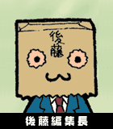

おっほん、編集長の後藤です。電撃ＧＡＭＥ ＣＵＢＥ（以下電撃ＧＣ）の雑誌紹介ですね。ハイ、最大のウリは「攻略記事の濃さとボリューム」でしょうか。ユーザーがもっとも知りたいこと、使いやすいと考えるような攻略記事を吟味・選択してお届けしています。ちょっと電撃らしいスパイスをきかせてはいますけど…。特に期待のタイトルについては、何十ページにもわたる大ボリュームでお伝えしています。今後の予定では、『マリオサンシャイン』『ゼルダＧＣ』のときは特に期待していてください。
また、任天堂さんのＧＣ情報はもちろんですが、電撃がコレはと思うサードパーティのＧＣソフトは、新作から攻略までしっかりフォローしようと決めています。ですからサードパーテイのみなさん、いいゲームがあったら電撃に。そして読者のみなさん、スクープＧＣ新作は電撃でね。
おっと、言い忘れてましたが、もちろんＧＢＡ情報もあります。濃厚攻略＆新作情報を厳選してお届けしていますからコチラのほうも注目してください。
そしてもう１つのウリが、関係者の声をダイレクトに伝えていく「インタビュー＆データ分析記事」と「濃厚な読者コーナー」でしょうか。毎号さまざまな関係者の声をお届けし、ＧＣ新作の秘密を探る「キーパーソンインタビュー」や、読者の声を電撃なりのエンターテインメント情報で発信している「真ゲームの素」などは人気があります。どちらも読者人気投票で上位にくるコーナーなので一読してみてください。
最後に気づきにくいかもしれませんが、電撃ＧＣでは、攻略記事には「欄外」を入れるようにしています。限られたスペースに有効な情報をより多くつめこむためには、空きスペースがもったいないですよね。また、同様の理由で記事中もちょっと小さい文字を使用しています。ページのスミズミまで長く楽しめるよう、使える情報からニヤリとさせるネタ、ときにはどーでもいい話までいろんな話題が満載です。そんなところにも注目して読んでみてください。
といった感じで、「１クラス上の任天堂ゲーム専門誌」を目指した誌面になっています。また、対象とする年齢層もちょっと高めです。ちょっと大人なゲーム情報を知りたい人は、ぜひ読んでみてください。そして気に入ったら続けて読んでください。
それでは！
|